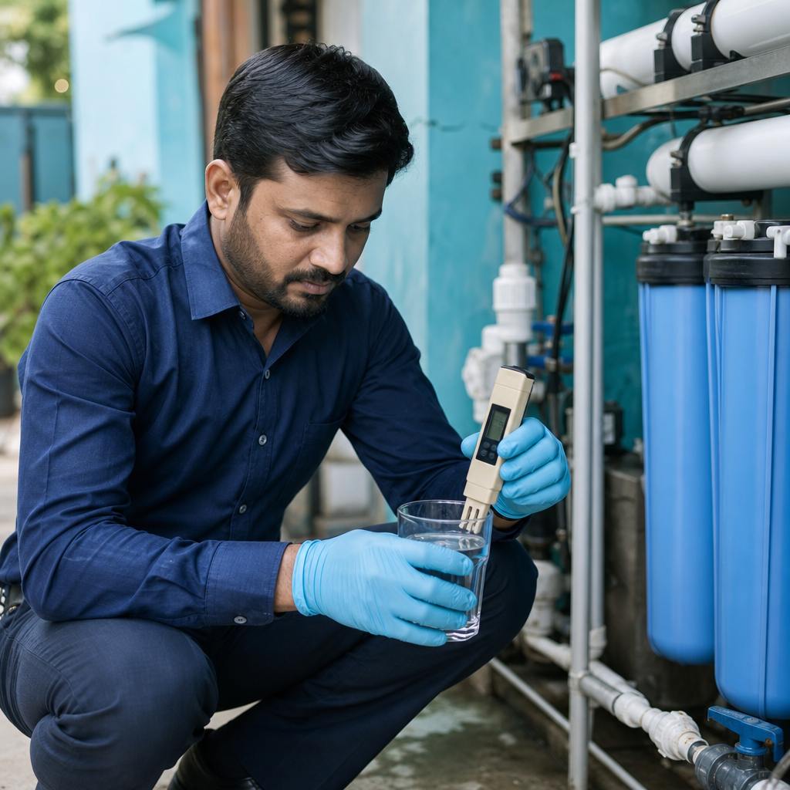

Installation done right — maintenance that actually shows up
Commissioning quality and AMC discipline decide whether your RO, softener or STP thrives through Ahmedabad summers — or limps from one emergency visit to the next.
The real cost of “set and forget”
Gujarat heat, hard water and skipped service destroy plants early
Membranes foul, resin beds channel, UV sleeves cloud and STP blowers get ignored until odour complaints escalate. DA Water Treatment Expert installs with logged baselines, then runs preventive routes so society secretaries and facility managers are not chasing WhatsApp technicians at midnight.
- Install crews familiar with west Ahmedabad plant rooms and risers
- Commissioning checklists with TDS, hardness and pressure baselines
- Scheduled AMC visits — not only when something fails
- Service records committees and auditors can file

Benefits
What clients notice after we take over service
Fewer surprise shutdowns
Pre-filters, antiscalant and media changes happen on schedule — before product water quality collapses at peak load.
Predictable annual cost
AMC scopes spell out visits, consumables and response windows so budgets stop being emergency-driven.
Trained on-site staff
Society operators and kitchen teams get clear daily checks — salt, pressure gauges, tank hygiene — not mystery panels.
Faster local response
Based in Shela, we reach Bopal, South Bopal and SG Highway corridors quickly when something does need urgent attention.
Honest parts advice
We recommend membrane or media replacement when readings justify it — not because a calendar sticker says so.
One partner across assets
RO, softener, filtration and wastewater units can sit under a single AMC conversation instead of three vendors.
Features
What our install and AMC packages typically include
- Mechanical and electrical installation of new or upgraded skids
- Piping, drain routing and sample-point discipline
- Start-up flushing, sanitisation and performance verification
- Handover packs with operating parameters and spare recommendations
- Preventive visits for RO, softener, UF/UV and multi-media plants
- Filter change, CIP support and membrane health checks
- STP/ETP routine checks where we supply or support the plant
- Priority call-outs and WhatsApp coordination during AMC term
Why DA Water
Installers who stay accountable after the ribbon is cut
Too many Ahmedabad projects end at “handover photo.” We design or take over plants knowing we will be the ones answering when hardness creeps up in May. Local ownership from SHELADIA ERIS, Club O7 Road — not a distant call centre.
Process
How installation and AMC engagement runs
Survey
Site walk, utility check, access constraints and water quality snapshot before tools come on site.
Install
Aligned piping, safe electrics, media loading and leak-tested joints — coordinated around society or kitchen hours.
Commission
Baseline readings logged; operators walked through start/stop, alarms and daily checks.
Maintain
Calendarised AMC visits, consumable planning and escalation when trends move the wrong way.
FAQ